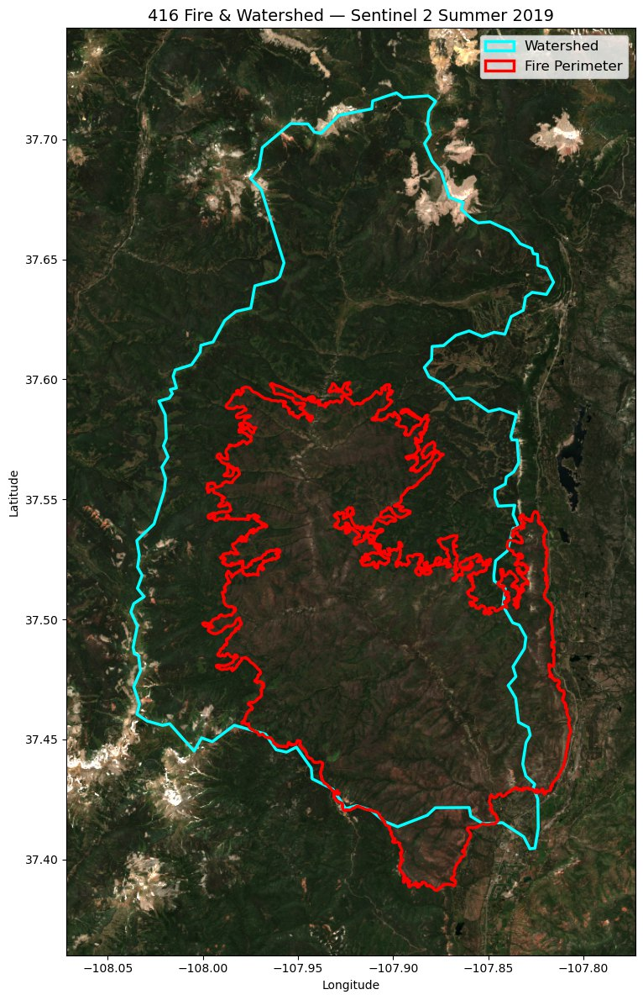

Post-Fire Flood Prediction: Vegetation Recovery Metrics

Wildfire changes how a watershed answers rain. Strip the vegetation off a hillslope and an ordinary storm can turn into a damaging flood — and how big that flood gets, and how the risk fades as plants grow back, depends heavily on how much vegetation has recovered. Yet most post-fire flood models represent that recovery crudely, if at all.
My piece of this project is a set of vegetation recovery metrics that put a number on exactly that: for each flood event, how far had the watershed's vegetation bounced back at the moment the flood happened?
How the metric works
For roughly 2,500 flood events across 219 burned watersheds (from the Ebel et al. 2024 dataset), the pipeline compares vegetation in the flood year's growing season against the average of the five growing seasons before the fire. That before-versus-after comparison becomes a recovery ratio: near 1 means vegetation is back to its pre-fire baseline; well below 1 means the basin is still bare and primed for a bigger flood. Four spectral indices — NDVI, NBR, GRVI, and MODIS LAI — each get their own metric, computed both over the whole watershed and over just the burned area inside it.

The messy parts
- Many satellites, one comparable signal. Events span decades, so the pipeline picks the right sensor for each date — Sentinel-2 after 2017, Landsat 8 back to 2013, Landsat 5/7 before that — with matching cloud masks and band mappings so the indices stay comparable across platforms.
- All server-side, resumable. The imagery work runs in Google Earth Engine, parallelized across events and growing seasons, with checkpointing so a multi-thousand-event run can pick up where it left off.
- Rebuilding the record. The source flood table had no event dates, so I reconstructed them by joining flood records to MTBS fire perimeters, pulled 200+ watershed boundaries from the USGS NLDI API, and intersected each burn with its watershed.